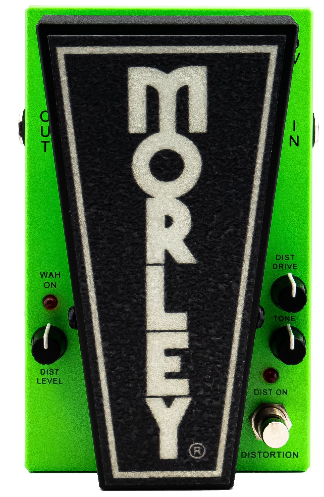
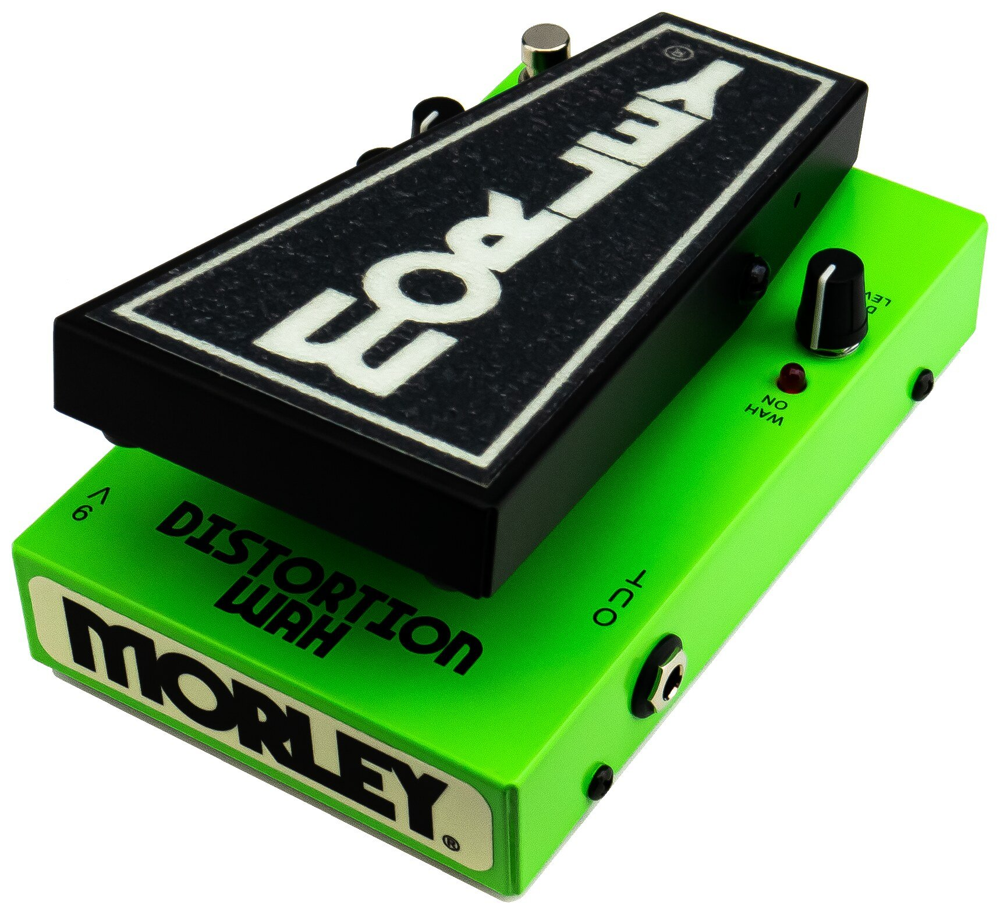

20/20 Distortion Wah
MTPDW & MTPDW-EU · Owner’s Manual

Thank you for choosing a Morley 20/20 Distortion Wah. You now own the best pedal made!
Please take a few minutes to familiarize yourself with the features of your new pedal. We hope you enjoy using it as much as we enjoyed building it.
About our buffer circuit
All Morley 20/20 pedals come equipped with our Buffer Circuit. This circuit prevents volume loss or tone change to the instrument. It also allows the use of long cables or pedal boards with lots of pedals and connection cables. You’ll sound and feel better GUARANTEED!
About our optical circuitry
Optical design ensures smooth pedal control of Wah, volume and/or switching that won’t get scratchy and wear out like potentiometer (pot) controlled pedals.
About the connections
- 9V
- ONLY Morley’s 9VDC 300 milliamp regulated adapter should be used.
- IN
- Input jack. Plug instrument into this jack using 1/4" guitar cable.
- OUT
- Connect amplifier to this jack using a 1/4" guitar cable.
Using an AC adapter
All Morley pedals use Morley’s 9VDC 300 milliamp regulated adapter. Center pin polarity is negative. Using a non-regulated adapter could cause a low frequency hum in your amplifier. Using an adapter with the wrong polarity may damage the pedal.
Using a battery
All Morley pedals are designed to use one 9V battery when not using an adapter. We suggest you use a good quality alkaline battery. To prolong battery life, unplug your cord completely from the input jack when not using the pedal. When the pedal is not used for extended periods, remove the battery from the pedal. Our “Quick Clip” Battery door allows easy access to battery compartment.
Warranty
All Morley® pedals are warranted for one year with copy of dated purchase receipt. To obtain warranty service, contact store where pedal was purchased or email service@morleyproducts.com.
Lifetime warranty is available at no charge, register at www.morleyproducts.com.
20/20 Distortion Wah features (model MTPDW & MTPDW-EU)
- SWITCHLESS OPERATION
- Simply step on to engage Wah and step off to go to bypass.
- DISTORTION MODE
- Engage by clicking DISTORTION footswitch.
- DIST LEVEL
- Adjust the loudness of the Distortion mode.
- DIST DRIVE
- Adjust the amount of Distortion drive.
- TONE
- Dial in tone of the Distortion.
MTPDW & MTPDW-EU specifications
| Power: | 9V Battery or 9VDC 300mA regulated (center negative) |
|---|---|
| Indicator (right): | LED on DIST engaged, LED off DIST bypassed |
| Indicator (left): | LED on WAH engaged |
| Dimensions: | 6.75" L x 4.5" W x 2.75" H |
| Current Draw: | 9 mA @ 9VDC |
| Weight: | 2 lb. / 0.92 kg |

Glow-In-The-Dark Treadle Grip
Glow-In-The-Dark Toe End Logo
Further notes
Not part of the Morley manual: compiled from Morley’s product description, retailer listings and general pedal practice. Sources are linked in each note.
Buffered bypass
The pedal is not true bypass. Its 20/20 buffer stays in the signal path even when neither the wah nor the distortion is engaged, so the bypassed pedal is not electrically the same as a plain cable (Equipboard, Morley: Buffers vs. True Bypass).
Signal order
The distortion sits after the wah inside the pedal; the order is fixed. Morley redesigned its classic PDW Distortion circuit for this pedal with more gain and a new tone circuit (Thomann, rockboard).
Tone changes with the pedal off
Three things to check, most likely first:
- A fuzz after the pedal. Vintage-style fuzzes, germanium Fuzz Faces above all, expect to see the guitar’s pickups directly. Behind a buffer they sound harsher, clean up less with the guitar’s volume and can crackle. Put the fuzz before the Distortion Wah if the board allows (Premier Guitar, Morningstar, Screaminfx).
- The wah is still on. The switchless wah turns off a moment after the treadle returns to its rest position. A treadle that doesn’t return all the way keeps the wah engaged and the tone dark. The left LED shows it: lit means the wah is on.
- Power. The buffer is active, so a weak battery or a non-regulated adapter affects the sound even in bypass. Use a fresh alkaline battery or a regulated 9VDC center-negative supply (see Using an AC adapter).